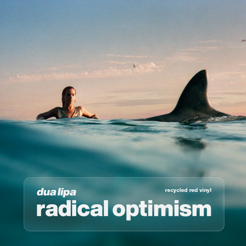

Escucha su música


Últimas noticias
Radical Optimism de Dua Lipa ya está aquí:

Son 11 los temas que conforman este disco, de momento, porque si sigue la línea actual de lanzar versiones extendidas (lo hizo con Future Nostalgia), entonces dentro de poco deberíamos tener más canciones por descubrir. Pero por ahora, son 37 minutos de música con la que no parar de bailar y curar los corazones rotos.